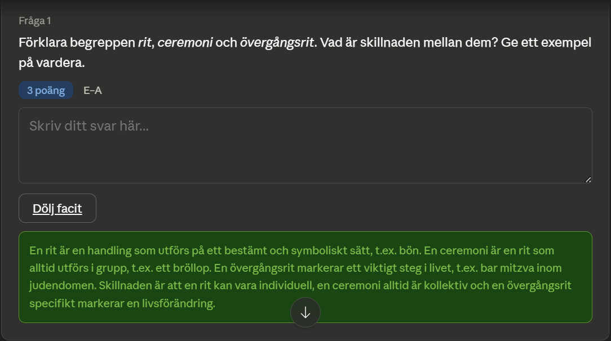
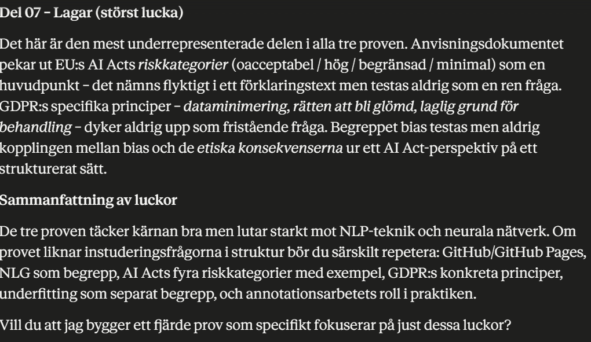

Verktyget
Claude.ai
Länk: https://claude.ai
Utvecklat av: Anthropic
Claude är en avancerad generativ AI med stort kontextfönster, hög resonemangsförmåga och stark självkritisk förmåga.
Exempel 1 – Övningsprov i Religion
"Ge mig ett exempelprov på detta:"



Exempel 2 – AI-provet (med uppladdade PDF:er)


"Kan du själv hitta några brister..."


Min slutliga analys
Styrkor: Stort kontextfönster, bra på att skapa interaktiva prov, imponerande självkritik, hög textkvalitet.
Svagheter: Kan utelämna information om prompten är otydlig, begränsad gratisversion.
Sammanfattning: Claude.ai är en mycket stark allround-AI som presterar i toppklass för akademiskt arbete.